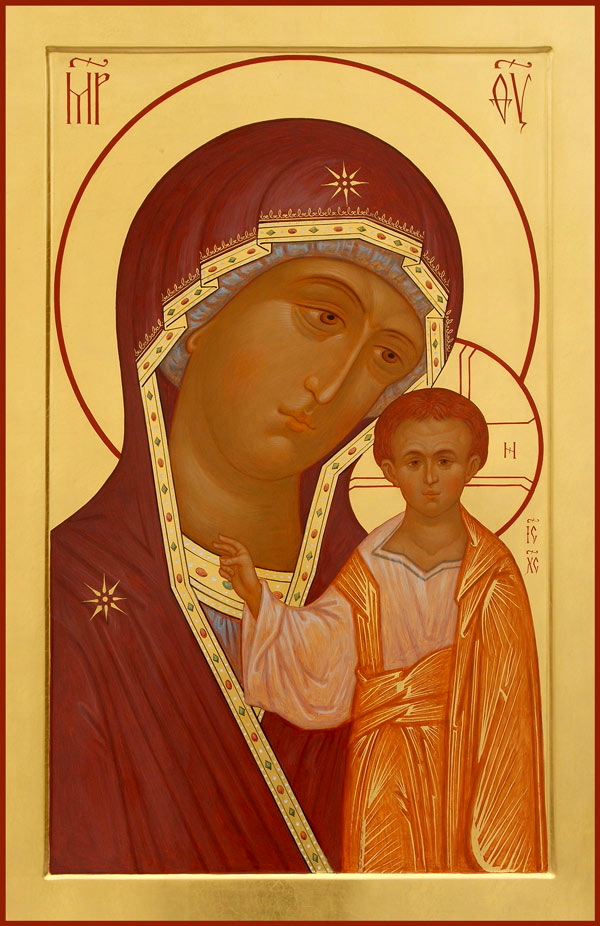

Избра́нной от все́х родо́в Засту́пнице ро́да христиа́нскаго, покро́вом Своея́ бла́гости покрыва́ющей страну́ на́шу правосла́вную, благода́рственная пе́ния прино́сим Ти́, Богоро́дице, о явле́нии чу́дныя Твоея́ ико́ны. Ты́ же, я́ко Всеми́лостивая, все́х притека́ющих к Тебе́ Помо́щнице, заступа́й на́с во все́х ско́рбех и ну́ждах, беда́х и напа́стех, да зове́м Ти́:
Избранной от всех родов Заступнице христианского рода, покровом Своей благости покрывающей страну нашу православную, благодарное пение приносим Тебе, Богородица, о явлении чудной Твоей иконы. Ты, как Всемилостивая, всех прибегающих к Тебе Помощница, защищай нас во всех скорбях и нуждах, бедах и напастях, да взываем к Тебе:
Ра́дуйся, Засту́пнице усе́рдная ро́да христиа́нскаго.
Радуйся, усердная Заступница христианского рода.
А́нгел предста́тель по́слан бы́сть рещи́ Богоро́дице «Ра́дуйся», егда́ Бо́г Сло́во воплоща́шеся во утро́бе Ея́: и мы́, гре́шнии, прославля́юще явле́ние чу́дныя Ея́ ико́ны и Боже́ственнаго Младе́нца Спа́са Христа́, со умиле́нием вопие́м Благода́тней:
Ангел-предводитель был послан сказать Богородице: «Радуйся!», когда Бог Слово воплощался из утробы Её: и мы, грешные, прославляя явление чудесной Её иконы и Божественного Младенца Спаса Христа, с умилением взываем к Благодатной:
Ра́дуйся, Богоизбра́нная Отрокови́це;
Радуйся, Богом избранная Отроковица;
ра́дуйся, Ма́ти Бо́жия.
радуйся, Матерь Божья.
Ра́дуйся, Цари́це Небесе́ и земли́;
Радуйся, Царица Неба и земли;
ра́дуйся, све́тлое Це́ркве Небе́сныя и земны́я украше́ние.
радуйся, светлое украшение Церкви Небесной и земной.
Ра́дуйся, А́нгелы чти́мая;
Радуйся, почитаемая Ангелами;
ра́дуйся, пева́емая от Серафи́м.
радуйся, воспеваемая Серафимами.
Ра́дуйся, све́тлое проро́ческое сбытие́;
Радуйся, великое пророческое исполнение;
ра́дуйся, апо́столов похвало́.
радуйся, апостолов похвала.
Ра́дуйся, му́ченическое испове́дание;
Радуйся, мученическое исповедание;
ра́дуйся, преподо́бных ве́нче.
радуйся, преподобных венец.
Ра́дуйся, пра́ведных весе́лие;
Радуйся, праведных веселие;
ра́дуйся, гре́шных упова́ние.
радуйся, грешных упование.
Ра́дуйся, Засту́пнице усе́рдная ро́да христиа́нскаго.
Радуйся, усердная Заступница христианского рода.
Ви́дящи, Всенепоро́чная, с высоты́ Небе́снаго жили́ща Своего́, иде́же с Сы́ном Твои́м в сла́ве пребыва́еши, ско́рбь рабо́в Твои́х в новопросвеще́ннем гра́де, я́ко гне́внаго ра́ди Бо́жия посеще́ния ве́ра Христо́ва поруга́ема быва́ет ага́рянским злове́рием, благоволи́ла еси́ яви́ти ико́ну Свою́, чудесы́ ю́ прославля́ющи, да утвержда́емии зна́меньми Твоея́ благода́ти, христолюби́вии лю́дие ве́рно вопию́т Бо́гу: Аллилу́иа.
Видя, Всенепорочная, с высоты Небесного Своего жилища, где Ты с Сыном Твоим в славе пребываешь, скорбь рабов Твоих в новопросвещённем городе, как из-за гневного Божьего посещения вера Христова поругаема мусульманской ересью, Ты благоволила явить Свою икону, прославляя её чудесами, дабы укрепляемые знамениями Твоей благодати, христолюбивые люди верно взывали к Богу: Аллилуиа.
Разуме́ние трикра́тнаго явле́ния Богома́тере му́драя отрокови́ца и́щущи, тече́ ко власте́м, пове́дающи и́м ди́вное явле́ние и гро́зное преще́ние: мы́ же дивя́щеся свы́ше да́нному отрокови́це вразумле́нию, благогове́йно вопие́м к Преблагослове́нней:
Во сне трижды явления Богоматери мудрая отроковица видела, побежала к властям, рассказывая им дивное явление и грозное предупреждение: мы дивимся свыше данному отроковице откровению, благоговейно взываем к Преблагословенной:
Ра́дуйся, устна́ми чи́стыми хвалу́ Бо́гови соверша́ющая;
Радуйся, чистыми устами совершающая хвалу Богу;
ра́дуйся, та́йны благода́ти Бо́жия ве́рным открыва́ющая.
радуйся, верным открывающая тайны благодати Божьей.
Ра́дуйся, неве́рных сумни́тельное слы́шание;
Радуйся, для неверных сомнительное известие;
ра́дуйся, ве́рных изве́стная похвало́.
радуйся, для верных несомненная похвала.
Ра́дуйся, мо́лние, неве́рных устраша́ющая;
Радуйся, молния, устрашающая неверных;
ра́дуйся, сла́вою чуде́с Твои́х ве́рных ра́зум озаря́ющая.
радуйся, слава Твоих чудес озаряет разум верных.
Ра́дуйся, ага́рянскаго злове́рия обличе́ние;
Радуйся, мусульманской ереси обличение;
ра́дуйся, горды́ни и́х низложе́ние.
радуйся, их гордыни низложение.
Ра́дуйся, ве́ры христиа́нския утвержде́ние;
Радуйся, христианской веры укрепление;
ра́дуйся, почита́ния святы́х ико́н освяще́ние.
радуйся, почитания святых икон освящение.
Ра́дуйся, ско́рбь на́шу в ра́дость претворя́ющая;
Радуйся, скорбь нашу в радость превращающая;
ра́дуйся, несумне́нною наде́ждою на́с увеселя́ющая.
радуйся, искренней надеждой нас увеселяющая.
Ра́дуйся, Засту́пнице усе́рдная ро́да христиа́нскаго.
Радуйся, усердная Заступница христианского рода.
Си́ла Вы́шняго благода́тию Богома́тере умудри́ и укрепи́ отрокови́цу к иска́нию многоце́ннаго Бо́жия да́ра, и та́, с ве́рою дерза́ющи о Го́споде, приступи́ к труду́ и, скры́тое в земли́ обре́тши сокро́вище святы́я ико́ны Богома́тери, ра́достно возопи́ к Бо́гу: Аллилу́иа.
Сила Вышнего благодатью Богоматери сделала мудрой и укрепила отроковицу на поиски многоценного Божьего дара, и та, с верой в Господа дерзая, приступила к труду и скрытое в земле нашла сокровище, святую икону Богоматери, с радостью воззвав к Богу: Аллилуиа.
Име́ющи благоутро́бное промышле́ние о новопросвеще́нных лю́дех гра́да Каза́ни, от пречестны́я Твоея́ ико́ны то́ки чуде́с источи́ла еси́, Влады́чице, слепы́м теле́сныма очи́ма зре́ние подава́ющи, омраче́нных же душе́вно све́том богопозна́ния и благоче́стия озаря́ющи, де́вствующим под осене́нием Твоея́ ико́ны приста́нище небу́рное да́рующи. Сего́ ра́ди зове́м Ти́:
Имея милостивую заботу о новопросвещённых людях города Казани, от почитаемой Твоей иконы источники чудес открыла, Владычица, слепым зрение телесное подавая, омрачённых душой светом Богопознания и благочестия озаряя, девствующим под покровом Твоей иконы безмятежное пристанище даруя. Поэтому мы взываем к Тебе:
Ра́дуйся, явле́нием ико́ны Твоея́ тьму́ лю́тых обстоя́ний отгоня́ющая;
Радуйся, отгоняющая тьму тяжёлых обстоятельств явлением Твоей иконы;
ра́дуйся, луча́ми чуде́с все́х просвеща́ющая.
радуйся, просвещающая всех лучами чудес.
Ра́дуйся, слепы́х прозре́ние;
Радуйся, слепых прозрение;
ра́дуйся, омраче́нных смы́слом просвеще́ние.
радуйся, омрачённых душой просвещение.
Ра́дуйся, сла́во Правосла́вия;
Радуйся, слава Православия;
ра́дуйся, ти́хое приста́нище и́щущих спасе́ния.
радуйся, спокойная пристань ищущих спасения.
Ра́дуйся, Ма́ти целому́дрия;
Радуйся, Матерь целомудрия;
ра́дуйся, покро́ве и огражде́ние де́вства.
радуйся, покров и ограждение девства.
Ра́дуйся, Е́юже ликовству́ет все́ мно́жество ве́рных;
Радуйся, ибо с Тобой радуется всё множество верных;
ра́дуйся, Ея́же ра́ди рыда́ет де́монское по́лчище.
радуйся, ибо из-за Тебя рыдает полчище демонов.
Ра́дуйся, все́х христиа́н вожделе́нная Помо́щнице;
Радуйся, всех христиан желаемая Помощница;
ра́дуйся, все́х скорбя́щих Ра́досте.
радуйся, всех скорбящих Радость.
Ра́дуйся, Засту́пнице усе́рдная ро́да христиа́нскаго.
Радуйся, усердная Заступница христианского рода.
Бу́рю смяте́ний и крамо́лы врага́ми воздви́гнутую в стране́ на́шей утоли́ти тща́щься блаже́нный Ермоге́н, списа́тель чуде́с Твоея́, Богома́ти, ико́ны, сле́зно пред не́ю моля́шеся и, ви́дев, я́ко во́инству правосла́вному в щи́т и побе́дное зна́мение Твоя́ ико́на дарова́ся, ве́рою укрепля́емый до конца́ живота́ своего́, вопия́ше Бо́гу: Аллилу́иа.
Бурю смятений и крамолы поднятую врагами в нашей стране пытался укротить блаженный Ермоген, описатель чудес Твоей иконы, Богоматерь, со слезами пред ней молился и, видев, что православному воинству в щит и победное знамение Твоя икона была дарована, укреплённый верой до конца своей жизни, взывал Богу: Аллилуиа.
Слы́шавше правосла́внии во́ини открове́нную Преподо́бным Се́ргием святи́телю Арсе́нию та́йну, я́ко предста́тельством Богома́тере су́д об Оте́честве на́шем преложе́н на ми́лость, ико́ну Богома́терню, я́ко зна́мя побе́дное, прии́мше, исхити́ша ма́терь градо́в ру́сских из ру́к супоста́т и возопи́ша Засту́пнице христиа́н:
Услышав православные воины открытую преподобным Сергием тайну святителю Арсению, что заступничеством Богоматери суд над нашим Отечеством изменён на милость, икону Богоматери, как победное знамя, приняв, матерь городов русских вырвали из рук противников и возопили Заступнице христиан:
Ра́дуйся, Ма́ти Бо́га Вы́шняго;
Радуйся, Матерь Бога Вышнего;
ра́дуйся, я́ко за все́х мо́лиши Сы́на Твоего́, Христа́ Бо́га на́шего.
радуйся, что за всех молишь Сына Твоего, Христа Бога нашего.
Ра́дуйся, я́ко все́м твори́ши спасти́ся в держа́вный Тво́й покро́в прибега́ющим;
Радуйся, что содействуешь спасению всех, под мощный Твой покров прибегающих;
ра́дуйся, Засту́пнице все́х су́щих в ско́рбех и боле́знех.
радуйся, Заступница всех, находящихся в скорбях и болезнях.
Ра́дуйся, все́м моля́щимся сокруше́нным се́рдцем пред пречи́стым Твои́м о́бразом поле́зная да́рующая;
Радуйся, всем молящимся с сокрушённым сердцем пред пречистым Твоим образом дарующая полезное;
ра́дуйся, избавле́ние зо́л все́м, невозвра́тно наде́жду иму́щим на Тя́.
радуйся, избавление от всех зол, имеющим твердую надежду на Тебя́.
Ра́дуйся, ти́хое и до́брое приста́нище;
Радуйся, тихое и доброе пристанище;
ра́дуйся, ско́рая Помо́щнице.
радуйся, скорая Помощница.
Ра́дуйся, гото́вый и те́плый покро́ве спасе́ния;
Радуйся, готовый и усердный покров спасения;
ра́дуйся, источа́ющая на́м неоску́дныя ми́лости.
радуйся, источающая нам неоскудные милости.
Ра́дуйся, предваря́ющая на по́мощь;
Радуйся, спешащая на помощь;
ра́дуйся, избавля́ющая от все́х бе́д.
радуйся, избавляющая от всех бед.
Ра́дуйся, Засту́пнице усе́рдная ро́да христиа́нскаго.
Радуйся, усердная Заступница христианского рода.
Боготе́чная звезда́ яви́ся Твоя́, Богома́ти, ико́на, всю́ страну́ Росси́йскую обтека́ющая, луча́ми чуде́с Твои́х осиява́ющая все́х блужда́ющих по мо́рю стра́стнаго жития́, мра́к печа́лей и мглу́ вся́ких неду́г и скорбе́й прогоня́ющая и наставля́ющая на пу́ть спасе́ния с ве́рою к Тебе́ притека́ющих и вопию́щих к Бо́гу: Аллилу́иа.
Богом движимая звезда явилась Твоя икона, Богоматерь, окружившая всю Россию, озаряющая лучами чудес Твоих всех блуждающих по морю страстной жизни, прогоняющая мрак печали и тучу всяких недугов и скорбей и наставляющая на путь спасения с верой к Тебе прибегающих и взывающих к Богу: Аллилуиа.
Ви́дев ца́рь Пе́тр, я́ко от святы́я ико́ны Богома́терни благода́тию Бо́жиею содева́ются мно́гия чудеса́, прие́млет ю́ в путеводи́тельницу во́инству своему́ и в де́нь бра́ни на све́ев в щи́т и покро́в, и победи́в до конца́ врага́ с по́мощию Богома́тере, те́м ка́мень соверше́нный во основа́ние но́ваго ца́рствующего гра́да положи́, ико́ну же Твою́ чу́дную, я́ко освяще́ние, я́ко щи́т и огражде́ние, в се́рдце гра́да поста́ви. Сего́ ра́ди вопие́м Пречи́стей:
Видя царь Пётр, что от святой иконы Богоматери Божьей благодатью производятся многие чудеса, берёт её своему воинству в путеводительницы и в день сражения против шведов в щит и покров, и полностью победив врага с помощью Богоматери, тем безупречный камень в основание нового царствующего города положил, икону Твою чудесную, как освящение, как щит и ограждение, в сердце города поставил. Поэтому взываем к Пречистой:
Ра́дуйся, жили́ще и до́ме Христа́ Бо́га на́шего;
Радуйся, жилище и дом Христа Бога нашего;
ра́дуйся, вмести́лище неизрече́нныя Его́ сла́вы.
радуйся, вместилище несказанной Его славы.
Ра́дуйся, гра́де одушевле́нный, при́сно ца́рствующий;
Радуйся, духовный город, всегда царствующий;
ра́дуйся, пала́то преукраше́нная.
радуйся, изукрашенная палата.
Ра́дуйся, Ра́досте градо́в и ве́сей;
Радуйся, Радость городов и сёл;
ра́дуйся, непобеди́мое христиа́н в беда́х храни́лище и предгра́дие.
радуйся, непобедимая охрана и ограда христиан в бедах.
Ра́дуйся, Це́ркве Правосла́вныя похвало́;
Радуйся, Церкви Православной похвала;
ра́дуйся, Ру́сской земли́ утвержде́ние.
радуйся, Русской земли сила.
Ра́дуйся, христолюби́ваго во́инства Помо́щнице;
Радуйся, Помощница воинства, которое любит Христа;
ра́дуйся, враго́в одоле́ние.
радуйся, одоление врагов.
Ра́дуйся, от бе́д избавле́ние;
Радуйся, избавление от бед;
ра́дуйся, Ма́терними Твои́ми щедро́тами все́х посеща́ющая.
радуйся, Твоей Материнской милостью всех посещающая.
Ра́дуйся, Засту́пнице усе́рдная ро́да христиа́нскаго.
Радуйся, усердная Заступница христианского рода.
Предстоя́ще пред пречи́стым Твои́м о́бразом архиере́ев сосло́вии и вси́ лю́дие, мона́си и мирсти́и, пропове́дуют, Госпоже́ Богороди́тельнице, вели́кия Твоя́ ми́лости, я́ко гра́ды огражда́еши, оби́тели покрыва́еши, ве́си защища́еши, и, ве́дуще Тя́ вои́стинну Помо́щницу си́льну и непобеди́му, со слеза́ми прино́сят Ти́ моли́твы, да простре́ши к Сы́ну Твоему́ Богоно́снеи ру́ки за лю́ди Твоя́, во е́же изба́вити на́с от все́х бе́д и напа́стей, да благода́рне вопие́м Бо́гу: Аллилу́иа.
Предстоя перед пречистым Твоим образом сословие архиереев и все люди, монахи и мирские, проповедуют, Госпожа Богородица, великие Твои милости, что ограждаешь города, покрываешь обители, защищаешь сёла, и, зная Тебя́ действительно как сильную и непобедимую Помощницу, со слезами приносят Тебе молитвы, да поднимешь к Сыну Твоему руки, которые носили Бога, за людей Твоих, чтобы избавить нас от всех бед и напастей, да с благодарностью взываем к Богу: Аллилуиа.
Возсия́вши просвеще́ние и́стинное и отгна́вши дре́вле ле́сть ага́рянскую во новопросвеще́нней стране́ Каза́нской, ны́не во все́х гра́дех росси́йских све́тиши све́том чуде́с и ми́лостей: притека́ющии бо с ве́рою ко Твое́й ико́не цельбоно́сней скорбе́й избавле́ние, неду́гов исцеле́ние и ра́дости вся́кия исполне́ния прие́млют, вопию́ще Тебе́ усе́рдно:
Озарив просвещением истины и отогнав некогда коварство мусульман в новопросвещённой Казани, ныне во всех русских городах светишь светом чудес и милостей, ибо прибегающие с верой к Твоей приносящей исцеления иконе избавление от скорбей, исцеление от недугов и исполнение всякой радости принимают, взывая к Тебе с усердием:
Ра́дуйся, неистощи́мый исто́чниче святы́ни;
Радуйся, неистощимый источник святыни;
ра́дуйся, многотеку́щая реко́ Боже́ственная благода́ти.
радуйся, обильно текущая река Божественной благодати.
Ра́дуйся, гре́шных с Бо́гом примире́ние;
Радуйся, примирение грешных с Богом;
ра́дуйся, грехо́в на́ших очище́ние.
радуйся, очищение грехов наших.
Ра́дуйся, благоче́стия Наста́внице;
Радуйся, благочестия Наставница;
ра́дуйся, в до́брых де́лех утвержде́ние и по́моще.
радуйся, в добрых делах укрепление и помощь.
Ра́дуйся, до́брыя обе́ты прие́млющая;
Радуйся, настоящие обеты принимающая;
ра́дуйся, благи́м наме́рением спосо́бствующая.
радуйся, благим намерениям способствующая.
Ра́дуйся, злы́я начина́ния разруша́ющая;
Радуйся, разрушающая злые начинания;
ра́дуйся, вра́жия ко́зни расторга́ющая.
радуйся, расторгающая вражеские козни.
Ра́дуйся, ско́рая челове́ком Помо́щнице;
Радуйся, быстрая Помощница людям;
ра́дуйся, ми́лость сугу́бо на́м подаю́щая.
радуйся, вдвойне милость нам подающая.
Ра́дуйся, Засту́пнице усе́рдная ро́да христиа́нскаго.
Радуйся, усердная Заступница христианского рода.
Хотя́щу наро́ду правосла́вному испове́дати ми́лости Преблагослове́нныя Цари́цы Не́ба и земли́ и по си́ле благода́рственная принести́ о избавле́нии его́ от наше́ствия иноплеме́нных, ди́вному хра́му, созда́нному в че́сть пречу́дныя ико́ны, побе́дная в да́р принесе́, да вси́ па́мятующе ми́лость Богома́тере, спа́сшия гра́д се́й и страну́, вы́ну воспева́ют Бо́гу благода́рными усты́: Аллилу́иа.
Когда православный народ решил открыть всем милости Преблагословенной Царицы Неба и земли и по силе возблагодарить об избавлении его от нашествия иноплеменных, то принес в дар за победу дивный храм, созданный в честь самой чудесной иконы, чтобы все, вспоминая милость Богоматери, спасшей этот город и страну, всегда воспевали Богу с благодарностью: Аллилуиа.
Сто́льному гра́ду Росси́и свята́я ико́на Твоя́, Богома́ти, вои́стинну яви́ся блага́я Одиги́трия, я́коже дре́вле Царегра́ду: к Тебе́ бо прибега́ют лю́дие, по́мощи Твоея́ на нача́ло пути́ и де́л свои́х прося́ще и благода́рственная принося́ще моле́ния пред пречи́стою ико́ною Твое́ю за избавле́ние от скорбе́й и напа́стей, Тебе́ Помо́щницу и Засту́пницу кре́пкую ве́дают. Те́мже благода́рственно вопие́м Ти́:
Столичному городу России Твоя святая икона, Богоматерь, воистину стала благой Одигитрией , как некогда Царьграду: к Тебе прибегают люди, Твоей помощи на начало пути и своих дел прося и принося благодарственные молитвы пред пречистой Твоей иконой за избавление от скорбей и напастей, Тебя Помощницу и Заступницу сильную знают. Поэтому и мы с благодарностью взываем к Тебе:
Ра́дуйся, Росси́йския страны́ покро́ве;
Радуйся, покров России;
ра́дуйся, Правосла́вия в не́й огражде́ние и утвержде́ние.
радуйся, Православия в ней ограждение и укрепление.
Ра́дуйся, несокруши́мый щи́те во́инов на́ших;
Радуйся, несокрушимый щит наших воинов;
ра́дуйся, броне́ и́х неуязви́мая.
радуйся, броня их неуязвимая.
Ра́дуйся, ко́зни враго́в облича́ющая;
Радуйся, обличающая козни врагов;
ра́дуйся, я́ко паучи́ну и́х растерза́ющая.
радуйся, расторгающая их словно паутину.
Ра́дуйся, нече́стия обличе́ние;
Радуйся, обличение нечестия;
ра́дуйся, крамо́лы разруше́ние.
радуйся, разрушение крамолы.
Ра́дуйся, ю́ных от заблужде́ний исправле́ние;
Радуйся, юных от заблуждений исправление;
ра́дуйся, ста́рцев утеше́ние.
радуйся, старцев утешение.
Ра́дуйся, душевре́дных уче́ний низложе́ние;
Радуйся, низложение вредных для души учений;
ра́дуйся, душеполе́зных зна́ний дарова́ние.
радуйся, дарование полезных для души знаний.
Ра́дуйся, Засту́пнице усе́рдная ро́да христиа́нскаго.
Радуйся, усердная Заступница христианского рода.
Стра́нно и сумни́тельно неве́рующим слу́шати, ка́ко от ико́ны Твоея́ то́ки благода́ти истека́ют, воня́ живо́тная благоуха́ет: мы́ же, ве́рующе сло́ву, рече́нному Тобо́й, Влады́чице, к первонапи́санней ико́не: «С тобо́й Моя́ благода́ть и си́ла», упова́ем, я́ко и с се́ю ико́ною благода́ть Твоя́ вы́ну: те́мже благогове́йно предстоя́ще лобыза́ем ю́, поклоня́емся е́й, я́ко Тебе́ Саме́й су́щей, че́сть бо ико́ны на первообра́зное восхо́дит, и Твоя́ благода́ть се́ю ико́ною зна́мения и чудеса́ содева́ет все́м с ве́рою притека́ющим к Тебе́ и вопию́щим Бо́гу: Аллилу́иа.
Странно и сомнительно неверующим слушать, как от Твоей иконы источники благодати проистекают, живительный запах благоухает: мы, веря слову, сказанному Тобой, Владычица, к первой написанной иконе: «С тобой Моя благодать и сила», надеемся, что и с этой иконой благодать Твоя всегда: поэтому, благоговейно предстоя, лобызаем её, поклоняемся ей, как Самой Тебе, честь иконы восходит к первому образу, и Твоя благодать с этой иконой совершает знамения и чудеса всем с верой прибегающим к Тебе и вопиющим Богу: Аллилуиа.
Вся́ бы́вши горе́, к Небе́сным взя́та, и земны́х не оставля́еши, Богома́ти, свяще́нным Твои́м предста́тельством: и́маши бо ма́тернее дерзнове́ние ко Христу́ Бо́гу на́шему. Те́мже утверди́ в ми́ре глубо́це правосла́вных житие́ и вся́ поле́зная всегда́ да́руй рабо́м Твои́м, да велича́юще воспева́ем Ти́:
Будучи устремленной к Небу, к небесным была взята, и земных не оставляешь, Богоматерь, священным Твоим заступничеством, потому что имеешь материнское дерзновение ко Христу Богу нашему. Потому укрепи в мире глубоком православных жизни и всё полезное всегда даруй рабам Твоим, да, величая, взываем к Тебе:
Ра́дуйся, Невмести́маго вмести́лище;
Радуйся, Невместимого вместилище;
ра́дуйся, осене́нная си́лою Вы́шняго.
радуйся, осенённая силой Вышнего.
Ра́дуйся, прозя́бшая Кла́с Небе́сный;
Радуйся, произрастившая Колос Небесный;
ра́дуйся, ми́р ве́сь душепа́губнаго гла́да изба́вльшая.
радуйся, весь мир от губительного для души голода избавившая.
Ра́дуйся, вы́ну хода́тайствующая за ро́д на́ш;
Радуйся, всегда ходатайствующая за род наш;
ра́дуйся, я́ко мно́го мо́жет моли́тва Твоя́ пред Сы́ном Твои́м и Бо́гом.
радуйся, что много может молитва Твоя пред Сыном Твоим и Богом.
Ра́дуйся, все́х на́с при Кресте́ Сы́на Твоего́ усынови́вшая;
Радуйся, всех нас при Кресте Сына Твоего усыновившая;
ра́дуйся, всегда́ Ма́тернюю любо́вь к на́м явля́ющая.
радуйся, всегда Материнскую любовь к нам показывающая.
Ра́дуйся, Хода́таице ве́чных бла́г;
Радуйся, Ходатаица вечных благ;
ра́дуйся, и во вре́менней жи́зни поле́зная на́м подаю́щая.
радуйся, и во временной жизни полезное нам подающая.
Ра́дуйся, изве́стное прибе́жище на́ше во все́х ско́рбных обстоя́ниих;
Радуйся, известное прибежище наше во всех скорбных обстоятельствах;
ра́дуйся, несомне́нное утеше́ние в печа́лех.
радуйся, бесспорное утешение в печалях.
Ра́дуйся, Засту́пнице усе́рдная ро́да христиа́нскаго.
Радуйся, усердная Заступница христианского рода.
Вся́каго естества́ а́нгельскаго превы́шшая яви́лася еси́, Пресвята́я Де́во: Бо́га бо зачала́ еси́ пло́тию, Невмести́маго все́ми вмести́ла еси́ во утро́бе Твое́й, на рука́х носи́ла еси́ Нося́щаго ве́сь ми́р дла́нию: те́мже, я́ко Честне́йшую Херуви́м и Сла́внейшую без сравне́ния Серафи́м велича́юще Тя́, вопие́м о Тебе́ Бо́гу: Аллилу́иа.
Выше всего Ангельского мира явилась, Пресвятая Дева: Ты Бога зачала плотью, в утробе Твоей вместила Невместимого всеми, на руках носила Носящего весь мир в ладони: поэтому, как честью высшую Херувимов и несравненно славнейшую Серафимов величаем Тебя, и взываем о Тебе Богу: Аллилуиа.
Вити́я многовеща́нныя, я́ко ры́бы безгла́сныя, ви́дим о Тебе́, Богоро́дице: недоуме́ет бо вся́к язы́к благохвали́ти Тя́ по достоя́нию, изумева́ет у́м пе́ти Тя́, Богоро́дице; оба́че Блага́я су́щи, приими́ и от на́с арха́нгельский гла́с, Тебе́ вопию́щих:
Ораторов многоречивых, словно безголосых рыб, мы видим пред Тобой, Богородица: не может никакой язык воздавать великую похвалу Тебе по достоинству, изумляется ум воспевать Тебя, Богородица: но, будучи Благой, прими и от нас словами Архангела, Тебе возглашающих:
Ра́дуйся, Благода́тная;
Радуйся, Благодатная;
ра́дуйся, я́ко Госпо́дь с Тобо́ю.
радуйся, что Господь с Тобой.
Ра́дуйся, Благослове́нная в жена́х;
Радуйся, благословенна Ты между жёнами;
ра́дуйся, обре́тшая благода́ть у Бо́га.
радуйся, получившая благодать у Бога.
Ра́дуйся, роди́вшая Спаси́теля ми́ру;
Радуйся, родившая Спасителя миру;
ра́дуйся, Ма́ти Сы́на Бо́жия.
радуйся, Матерь Сына Божия.
Ра́дуйся, Роди́тельнице Ве́чнаго Царя́;
Радуйся, Родительница Вечного Царя;
ра́дуйся, израсти́вшая на́м пло́д живота́.
радуйся, произрастившая нам плод жизни.
Ра́дуйся, освяще́нная Ду́хом Святы́м;
Радуйся, освящённая Духом Святым;
ра́дуйся, осене́нная си́лою Всевы́шняго.
радуйся, осенённая силой Всевышнего.
Ра́дуйся, ве́рная Рабо́ Госпо́дня;
Радуйся, верная Раба Господа;
ра́дуйся, я́ко Тя́ блажа́т вси́ ро́ди.
радуйся, что Тебя ублажают все рода.
Ра́дуйся, Засту́пнице усе́рдная ро́да христиа́нскаго.
Радуйся, усердная Заступница христианского рода.
Спасти́ хотя́щи мно́гия от находя́щих зо́л, скорбе́й и боле́зней, чу́дную ико́ну Твою́, Богома́ти, дарова́ла еси́, ея́же ра́ди слепи́и прозира́ют, хроми́и хо́дят, разсла́бленнии возстаю́т, бесну́ющиися исцеля́ются, земли́ плодоно́сие подае́тся, лю́дие от смертоно́сныя я́звы избавля́ются, гра́ды и до́мы от огня́ спаса́ются: те́мже прославля́юще Бо́га, даю́щаго на́м таковы́я ми́лости, вопие́м Ему́ усе́рдно: Аллилу́иа.
Желая спасти многих от приходящих проблем, скорбей и болезней, чудесную икону Твою, Богоматерь, Ты даровала, благодаря которой слепые начинают видеть, хромые ходят, расслабленные поднимаются, беснующиеся исцеляются, подаётся плодородие земле, люди от смертельной болезни избавляются, города и дома от пожаров спасаются: поэтому прославляя Бога, дающего нам такие милости, взываем Ему с усердием: Аллилуиа.
Стена́ еси́, Богоро́дице, стране́ Росси́йстей, гра́дом огражде́ние и сла́ва, правосла́вному во́инству на враги́ укрепле́ние. Те́мже, благодаря́ще Тя́, вопие́м:
Ты стена России, Богородица, городам ограждение и слава, православному воинству укрепление против врагов. Поэтому, благодарим Тебя, и взываем:
Ра́дуйся, прославля́ющих Тя́ прославля́ющая;
Радуйся, прославляющая прославляющих Тебя;
ра́дуйся, не чту́щих Тя́ посрамля́ющая.
радуйся, посрамляющая не почитающих Тебя.
Ра́дуйся, враго́в устраше́ние;
Радуйся, врагов устрашение;
ра́дуйся, от наше́ствия иноплеме́нных избавле́ние.
радуйся, от нашествия иноплеменных избавление.
Ра́дуйся, во́инов кре́посте;
Радуйся, воинов крепость;
ра́дуйся, в дни́ бра́ни забра́ло и огражде́ние.
радуйся, в дни войны застава и ограждение.
Ра́дуйся, в дни́ ми́ра живоно́сный са́де, увеселя́ющий сердца́ ве́рных;
Радуйся, в дни мира живоносный сад, который увеселяет сердца верных;
ра́дуйся, ору́жие, его́же трепе́щут де́мони.
радуйся, оружие, которого трепещут демоны.
Ра́дуйся, спаси́тельный еле́й, умаща́ющий грехо́вныя ра́ны ка́ющихся;
Радуйся, спасительный елей, который умащает греховные раны кающихся;
ра́дуйся, те́плое на́ше упова́ние.
радуйся, усердное наше упование.
Ра́дуйся, несумне́нная на́ша Наде́ждо;
Радуйся, бесспорная наша Надежда;
ра́дуйся, ти́хое и до́брое приста́нище.
радуйся, тихое и доброе пристанище.
Ра́дуйся, Засту́пнице усе́рдная ро́да христиа́нскаго.
Радуйся, усердная Заступница христианского рода.
Пе́ние хвале́бное и благода́рственное прино́сят Тебе́, Влады́чице, припа́дающе ко ико́не Твое́й и любе́зно лобыза́юще ю́, де́в ли́цы, под держа́вным покро́вом Твои́м ти́хое и ми́рное и́ноческое житие́ провожда́ющии, и возложи́вше на Тя́ все́ упова́ние, ра́достно вопию́т Бо́гу: Аллилу́иа.
Хвалебное и благодарственное песнопение приносят Тебе, Владычица, припадая к иконе Твоей и с любовью лобызая её, сонмы дев, под державным покровом Твоим тихую и мирную иноческую жизнь проводящие, и возложив на Тебя всё упование, с радостью взывают к Богу: Аллилуиа.
Я́ко светоприе́мную свещу́, зри́м Твою́ честну́ю ико́ну, Пресвята́я Влады́чице: та́ бо невеще́ственный о́гнь благода́ти Твоея́ восприе́мши, и в подо́биих ея́ но́вы возжига́ет свети́льники, прича́стны тоя́жде си́лы благода́тныя, и озаря́ет чудесы́, наставля́ющи на пу́ть спасе́ния все́х вопию́щих Ти́ си́це:
Как светоносную свечу, видим Твою чтимую икону, Пресвятая Владычица: ибо она невещественный огонь благодати Твоей восприняв, и в подобных ей новые зажигает светильники, причастные той же силы благодатной, и озаряет чудесами, наставляя на путь спасения всех взывающих к Тебе так:
Ра́дуйся, Неве́сто Неневе́стная;
Радуйся, Невеста, брака не познавшая;
ра́дуйся, Богоизбра́нная Отрокови́це, Ма́ти Де́во.
радуйся, Отроковица, избранная Богом Матерь и Дева.
Ра́дуйся, до́брая Наста́внице непоро́чнаго де́вства;
Радуйся, добрая Наставница непорочного девства;
ра́дуйся, Храни́тельнице ревну́ющих о чистоте́.
радуйся, Хранительница ревнующих о чистоте.
Ра́дуйся, же́н похвало́;
Радуйся, жен похвала;
ра́дуйся, де́в велича́ние.
радуйся, дев величание.
Ра́дуйся, вдо́в заступле́ние;
Радуйся, вдов заступление;
ра́дуйся, сиро́т призре́ние.
радуйся, сирот призрение.
Ра́дуйся, ни́щих Пита́тельнице;
Радуйся, нищих Питательница;
ра́дуйся, наги́х одея́ние.
радуйся, нагих одеяние.
Ра́дуйся, печа́льных утеше́ние;
Радуйся, печальных утешение;
ра́дуйся, скорбя́щих весе́лие.
радуйся, скорбящих веселие.
Ра́дуйся, Засту́пнице усе́рдная ро́да христиа́нскаго.
Радуйся, усердная Заступница христианского рода.
Благода́ть да́ти восхоте́вши почита́ющим Тя́ с любо́вию, Богороди́тельнице, прису́щую Ти́ си́лу благода́тную оста́вила еси́ во святы́х Твои́х ико́нах, и́бо Боже́ственная благода́ть, спребыва́ющи те́м (ико́нам), зна́мения и чудеса́ вы́ну содева́ет и душе́вных и теле́сных неду́г исцеле́ние все́м с ве́рою приходя́щим подае́т Твои́ми Богома́терними непреста́нными к Бо́гу моли́твами о вопию́щих Ему́: Аллилу́иа.
Благодать дать восхотев почитающим Тебя с любовью, Богородица, присущую Тебе благодатную силу передала святым Твоим иконам, ибо Божественная благодать присутствует с теми иконами, знамения и чудеса всегда производит и душевных и телесных недуг исцеление всем с верой приходящим подаёт Твоими Богоматерними непрестанными к Богу молитвами о взывающих Ему: Аллилуиа.
Пою́ще Твоя́ чудеса́, бы́вшая в дре́вняя и настоя́щая времена́, хва́лим Тя́, я́ко Живоно́сный Исто́чник благода́ти, я́ко неистощи́мую реку́ чуде́с, я́ко бе́здну ми́лости и щедро́т, и все́ упова́ние по Бо́зе возлага́юще на Тя́ и в се́й и в бу́дущей жи́зни, прославля́юще Тя́, вопие́м:
Воспевая Твои чудеса, которые были в древнее и настоящее время, хвалим Тебя, как Живоносный Источник благодати, как неиссякаемую реку чудес, как бездну милости и щедрот, и всё упование после Бога возлагая на Тебя и в этой и в будущей жизни, прославляя Тебя, взываем:
Ра́дуйся, христиа́н непосты́дное упова́ние;
Радуйся, христиан неустрашимое упование;
ра́дуйся, ве́рных спаси́тельное прибе́жище.
радуйся, для верных спасительное прибежище.
Ра́дуйся, ненаде́жных наде́яние;
Радуйся, надежда для не имеющих надежды;
ра́дуйся, отча́янных спасе́ние.
радуйся, спасение отчаявшихся.
Ра́дуйся, ба́не, омыва́ющая со́весть;
Радуйся, баня, омывающая совесть;
ра́дуйся, росо́, оживля́ющая ду́ши.
радуйся, роса, оживляющая души.
Ра́дуйся, боле́зней врачевство́ ско́рое и безме́здное;
Радуйся, быстрое и безвозмездное исцеление болезней;
ра́дуйся, от все́х бе́д бы́строе избавле́ние.
радуйся, от всех бед быстрое избавление.
Ра́дуйся, Уте́шительнице во вся́кой ско́рби;
Радуйся, Утешительница в каждой скорби;
ра́дуйся, из глубины́ поги́бели спаса́ющая.
радуйся, спасающая из глубины погибели.
Ра́дуйся, отра́до в де́нь сме́рти;
Радуйся, отрада в день смерти;
ра́дуйся, еди́ная Наде́ждо и по сме́рти.
радуйся, единая Надежда и после смерти.
Ра́дуйся, Засту́пнице усе́рдная ро́да христиа́нскаго.
Радуйся, усердная Заступница христианского рода.
О Всепе́тая Ма́ти, ро́ждшая все́х святы́х Святе́йшее Сло́во, приими́ ны́не ма́лое сие́ моле́ние и, вели́чия ра́ди бла́гости Твоея́ и бе́здны щедро́т Твои́х, не помяни́ мно́жества грехо́в на́ших, но испо́лни во благи́х проше́ния на́ша, подава́ющи те́лу здра́вие, души́ спасе́ние, избавля́ющи от вся́кия ну́жды и печа́ли и Ца́рствия Небе́снаго насле́дники сотворя́ющи все́х ве́рно вопию́щих Бо́гу: Аллилу́иа.
О всепрославленная Матерь, родившая всех святых святейшее Слово, прими ныне это малое моление и, по величию Твоей благости и бездны щедрот Твоих, не помяни множество наших грехов, но наполни благие наши прошения, подавая телу здоровье, душе спасение, избавляя от всякой нужды и печали и Царства Небесного наследниками делая всех с верой взывающих Богу: Аллилуиа.
Этот конда́к читается трижды, затем икос 1-й и конда́к 1-й.
О Пресвята́я Госпоже́ Влады́чице Богоро́дице! Со стра́хом, ве́рою и любо́вию припа́дающе пред честно́ю ико́ною Твое́ю, мо́лим Тя́: не отврати́ лица́ Твоего́ от прибега́ющих к Тебе́, умоли́ милосе́рдая Ма́ти, Сы́на Твоего́ и Бо́га на́шего, Го́спода Иису́са Христа́, да сохрани́т ми́рну страну́ на́шу, Це́рковь Свою́ Святу́ю да незы́блему соблюде́т от неве́рия, ересе́й и раско́ла. Не и́мамы бо ины́я по́мощи, не и́мамы ины́я наде́жды, ра́зве Тебе́, Пречи́стая Де́во: Ты́ еси́ Всеси́льная христиа́н Помо́щница и Засту́пница. Изба́ви все́х с ве́рою Тебе́ моля́щихся от паде́ний грехо́вных, от наве́та злы́х челове́к, от вся́ких искуше́ний, скорбе́й, бе́д и от напра́сныя сме́рти: да́руй на́м ду́х сокруше́ния, смире́ние се́рдца, чистоту́ помышле́ний, исправле́ние грехо́вныя жи́зни и оставле́ние прегреше́ний, да вси́ благода́рне воспева́юще вели́чия Твоя́, сподо́бимся Небе́снаго Ца́рствия и та́мо со все́ми святы́ми просла́вим Пречестно́е и Великоле́пое И́мя Отца́ и Сы́на и Свята́го Ду́ха. Ами́нь.
О Пресвятая Госпожа Владычица Богородица! Со страхом, верой и любовью перед почитаемой и чудотворной Твоей иконой припадая, молим Тебя: не отврати Твоего лица от прибегающих к Тебе. Умоли, милосердная Матерь, Сына Твоего и Бога нашего, Господа Иисуса Христа, да сохранит в мире (в спокойствии) нашу страну, Церковь Свою Святую непоколебимой да сбережёт и от неверия, от ересей и раскола да избавит. Не имеем иной помощи, не имеем иной надежды, кроме Тебя, Пречистая Дева: Ты — всесильная для христиан Помощница и Заступница. Избавь же и всех, с верой к Тебе молящихся, от греховных падений, от покушения злых людей, от всяких искушений, скорбей, болезней, бед и от внезапной смерти. Даруй нам дух раскаяния о грехах, смирение сердца, чистые мысли, исправление от греховной жизни и оставление прегрешений, да все с благодарностью воспоют славу и милость Твою, которые Ты являешь над нами здесь на земле, сподобимся и Небесного Царствия, и там со всеми святыми прославим пречестное и великолепное имя Отца, и Сына, и Святого Духа во веки веков. Аминь.
О, Пресвята́я Влады́чице Богоро́дице, Цари́це Небеси́ и земли́, вы́шшая а́нгел и арха́нгел и всея́ тва́ри честне́йшая, чи́стая Де́во Мари́е, ми́ру блага́я Помо́щнице, и все́м лю́дем утвержде́ние, и во вся́ких ну́ждах избавле́ние! При́зри и ны́не, Госпоже́ Всеми́лостивая, на рабы́ Твоя́, Тебе́ умиле́нною душе́ю и сокруше́нным се́рдцем моля́щияся, со слеза́ми к Тебе́ припа́дающия и покланя́ющияся пречи́стому и цельбоно́сному о́бразу Твоему́, и по́мощи и заступле́ния Твоего́ прося́щия. О, Всеми́лостивая и Премилосе́рдая Де́во Богоро́дице Чи́стая! Воззри́, Госпоже́, на лю́ди Твоя́: мы́ бо гре́шнии не и́мамы ины́я по́мощи, ра́зве Тебе́ и от Тебе́ ро́ждшагося Христа́ Бо́га на́шего. Ты́ еси́ засту́пница и предста́тельница на́ша. Ты́ еси́ оби́димых защище́ние, скорбя́щим ра́дование, си́рым прибе́жище, вдо́вам храни́тельница, де́вам сла́ва, пла́чущим весе́лие, больны́м посеще́ние, немощны́м исцеле́ние, гре́шным спасе́ние, Сего́ ра́ди, о Богома́ти, к Тебе́ прибега́ем, и на Тво́й Пречи́стый о́браз с Предве́чным на руку́ Твое́ю держи́мым Младе́нцем, Го́сподем на́шим Иису́сом Христо́м взира́юще, умиле́нное пе́ние Тебе́ прино́сим и вопие́м: поми́луй на́с, Ма́ти Бо́жия, и проше́ние на́ше испо́лни, вся́ бо су́ть возмо́жна хода́тайству Твоему́: я́ко Тебе́ сла́ва подоба́ет ны́не и при́сно и во ве́ки веко́в. Ами́нь.
О Пресвятая Владычица Богородица, Царица Неба и земли, высшая Ангелов и Архангелов и честнейшая всех творений, чистая Дева Мария, миру благая Помощница, и всем людям утверждение, и во всяких нуждах избавление! Обрати своё внимание и ныне, Госпожа Всемилостивая, на рабов Твоих, к Тебе смиренной душой и сокрушённым сердцем молящихся, со слезами к Тебе припадающих и поклоняющихся пречистому и целительному Твоему образу, и помощи, и заступления Твоего просящих. О Всемилостивая и Премилосердная Дева Богородица Чистая! Посмотри, Госпожа, на людей Твоих: мы грешные не имеем другой помощи, кроме Тебя и от Тебя родившегося Христа Бога нашего. Ты — наша заступница и предстательница. Ты — защита обиженных, скорбящим радость, сиротам прибежище, вдовам хранительница, девам слава, плачущим веселие, больным посещение, немощным исцеление, грешным спасение, поэтому, о Богоматерь, к Тебе прибегаем, и на Твой Пречистый образ с Предвечным Младенцем на руках Твоих, Господом нашим Иисусом Христом взирая, умиленное пение Тебе приносим и взываем: помилуй нас, Матерь Божья, и прошения наши исполни, всё возможно Твоим ходатайством: ибо Тебе слава подобает ныне и всегда и вовеки веков. Аминь.
☧